Blocktrader supports submitting Eurex and EEX wholesale trade types. Note: EEX only supports Block trades.
The following wholesale trades are supported:
Blocktrader consists of the components needed for submitting wholesale trades on Eurex.
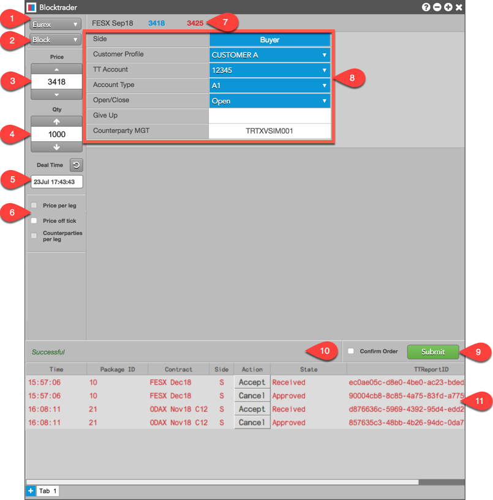
The image shows the following:
The Action column displays either a "Cancel" button when submitting a trade, or an "Accept" button when accepting a trade. Actions pending exchange approval appear as "Pending" in this column.
The State column shows the following states:
To submit a Wholesale Trade on Eurex:
You can also use the Explorer to find an instrument.
These fields are common for all supported Eurex wholesale trades unless otherwise noted.
Complete the additional fields in Blocktrader based on the wholesale trade type selected:
If Confirm order is checked, confirm the order before submitting it to the exchange.
Submitted trades are automatically inquired and approved. In the order report panel, the State column displays "Approved" in the order report panel. If needed, you can click the Cancel button in the Action column.
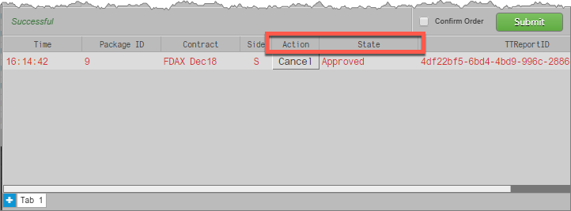
In the Audit Trail, the Message column shows that the inquire was "Received" and "Approved" automatically. When the counterparty accepts the trade, "Confirmed" and "Completed" are displayed in the Message column in the Audit Trail.
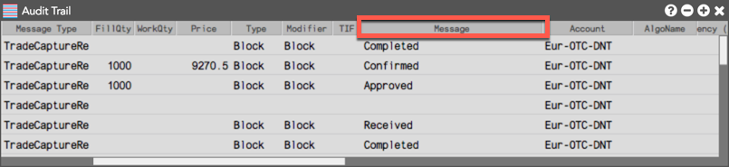
Note: Trades sent to you are automatically inquired and displayed in the Blocktrader order report panel.
To accept a Wholesale Trade on Eurex:
The State column in the order report panel shows a status of Received.
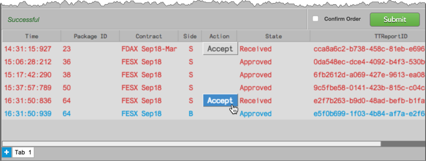
After you click "Accept", the trade is removed from the order report panel and the acceptance is sent to the exchange for approval.
When the transaction is approved, the exchange sends both sides "Confirmed" and "Completed" messages that are displayed in the Message column in the Audit Trail.
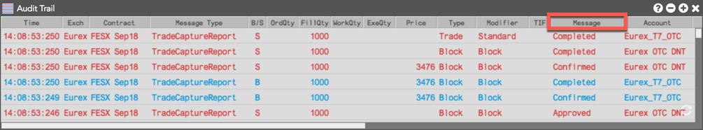
The table below lists the common fields for submitting wholesale trades on Eurex.
| Wholesale Trades on Eurex | ||
| Blocktrader Field | Description | |
|
Side |
Click the field to select your side of the trade: Buyer or Seller | |
|
Customer Profile |
A drop-down list of available Customer order defaults. Click the field and select a profile from the drop-down list. Only customers with Order Profiles defined in Setup appear in the Customer Profile list. If an account is provided in the selected profile, it will display in the TT Account field. | |
|
TT Account |
Sets the customer account number/name for the Buyer or Seller. Select an account with an active connection to Eurex. The account number/name has a maximum limit of 11 characters. |
|
|
Account Type |
Supported account types:
Sets the account type for submitting the trade. If set to Giveup (e.g., G2), the you must populate the Giveup field with the take-up member ID. |
|
|
Open/Close |
Sets whether the trade opens or closes a position. |
|
|
Giveup |
Sets exchange member ID of the Giveup firm (e.g., TTGXV). This field is mandatory when Account Type is set to "G2". |
|
|
Counterparty MGT |
Sets the exchange member ID of the counterparty receiving the trade. Eurex requires the entire 11 character ID in this field (e.g., TTGXVTRD001). |
|
To submit Block trades, complete the common fields for Eurex wholesale trades in Blocktrader. There are no additional fields required.
The following figure shows a Eurex Block trade using the common wholesale trade Fields.
Note: Blocks can be entered from the Sell side by toggling the "Buyer" button.
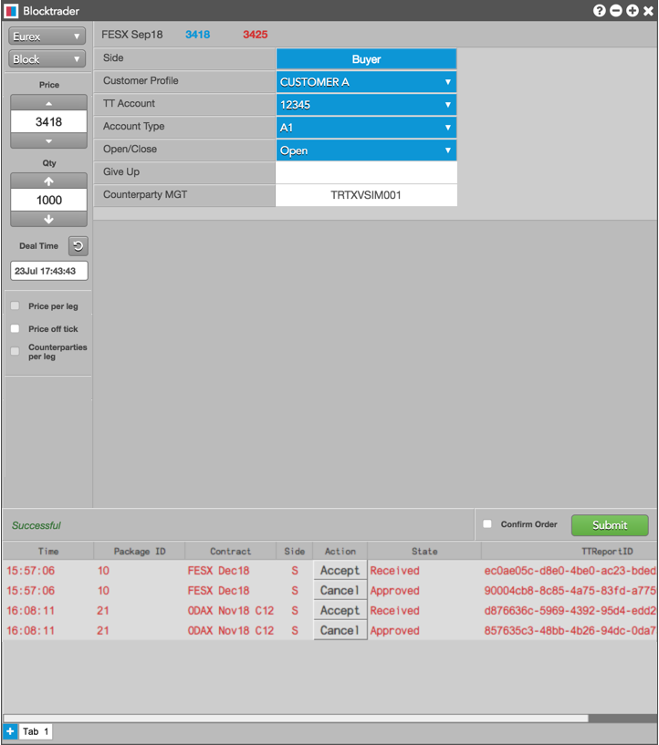
To submit Exchange for Swap trades, first complete the Blocktrader fields listed in Common Wholesale Trade Fields for Eurex. In addition, complete the fields provided in the following table.
| Additional Fields for Exchange for Swaps Trades | ||
| Blocktrader Field | Description | |
|
Settlement Date |
This field is mandatory for the buyer and display only for the seller. The settlement date of the swap trade must be entered. The value has to be greater than the current business date. |
|
|
Nominal Amount |
Sets the equivalent value of the futures leg to be traded. This value must be represented in units of one thousand. |
|
| Coupon | The interest rate of the fixed income instrument. | |
|
Coupon Frequency |
This field is mandatory for the buyer and display only for the seller. The fixed leg coupon frequency of the swap has to be entered. Enter the number of interest payments per year by selecting one of the following: Annually, Semi Annually, Quarterly, Monthly. | |
|
Currency |
The currency of the instrument being traded. | |
|
Customer 1 |
The identification of the first customer involved in the EFS swap trade. This field is optional. Enter a user-defined value of up to 20 characters. | |
|
Customer 2 |
The identification of the second customer involved in the EFS swap trade. This field is optional. Enter a user-defined value of up to 20 characters | |
|
Variable Rate Reference |
This field is optional for the buyer and display only for the seller. The variable rate reference can be up to 12 characters. | |
|
Variable Rate Offset |
This field is optional for the buyer and display only for the seller. Enter a numeric variable rate offset value greater than or equal to -99.9999 and less than or equal to 99.9999. | |
|
Start Date |
This field is mandatory for the buyer and display only for the seller. The start date of the swap must be entered. Its value must be greater than or equal to the settlement date. | |
|
End Date |
This field is mandatory for the buyer and display only for the seller. The end date of the swap must be entered. Its value must be greater than or equal to the start date. | |
The following figures show an example of an EFS trade.
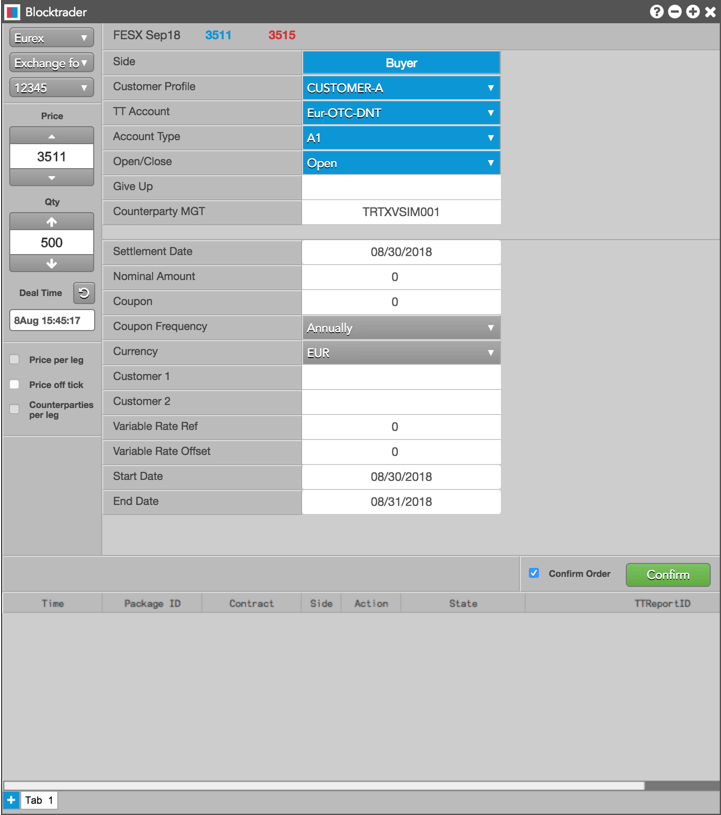
After a Block trade for an options contract is accepted and completed, you can initiate the Vola trade for the underlying futures contract.
Note: The Exch OrderID column in the Audit Trail shows the TT generated order ID value for the completed options Block trade. For Vola trades, record this value from the options trade (e.g., 67), and enter the value in the Options Trans ID field when using Blocktrader to submit the Vola trade for the underlying future contract.
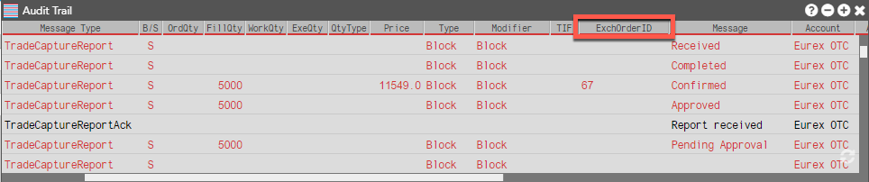
To submit the Vola trade, you must first complete the Blocktrader fields listed in Common Wholesale Trade Fields for Eurex. In addition, complete the fields provided in the following table.
| Additional Fields for Vola Trades | ||
| Blocktrader Field | Description | |
|
Options Trans ID |
The transaction number of the corresponding options trade. This number is displayed in the ExchOrderID column in the Audit Trail for the completed options Block trade. |
|
|
Options Product Name |
The underlying Options product name (e.g., OESX). Entered with the Options Transaction ID. |
|
|
Options Qty |
The quantity of the corresponding options trade. |
|
The following is an example of a Eurex Vola trade:
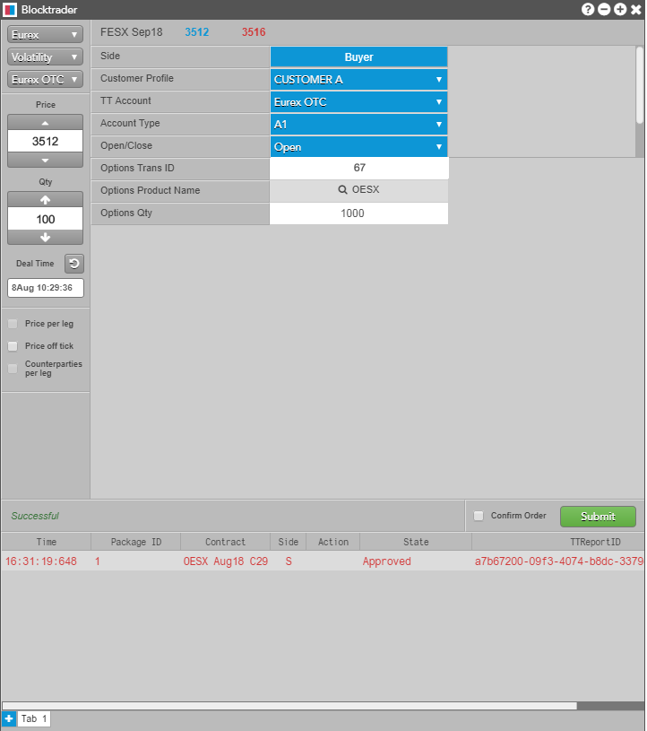
You can use Blocktrader to submit either side of an EFP trade. When you are notified by the counterparty that they have submitted a wholesale EFP Fixed Income buy order, you can submit the corresponding sell order and accept the trade in Blocktrader. As part of submitting the sell side of an EFP order and accepting the trade, you must select the Settlement Institution (SI) responsible for clearing the transaction.
To submit Exchange for Physical Fixed Income trades, first complete the Blocktrader fields listed in Common Wholesale Trade Fields for Eurex. In addition, complete the fields in the following table.
| Additional Fields for Exchange for Physical Fixed Income Trades | ||
| Blocktrader Field | Description | |
|
Settlement Date |
The date by which the buyer must pay for the securities delivered by the seller. | |
|
ISIN |
Set the unique, 12 alphanumeric value used to identify the equity cash basket linked to the transaction. Note: The first two characters of the Reference ID must be letters. |
|
|
SI |
Sets the settlement institution for the trade. This value must be provided for both the Buy and Sell sides of the trade. |
|
|
Nominal Amount |
Sets the equivalent value of the futures leg to be traded. This value must be represented in units of one thousand. |
|
|
Coupon Frequency |
The number of interest payments per year. Select one of the following: Annually, Semi Annually, Quarterly, Monthly. | |
|
Maturity |
The date that the fixed income instrument matures. | |
|
Hedge Type |
The hedging strategy for your side of the trade:
|
|
|
Cash Price |
The price of the fixed income instrument. | |
|
Issuer |
The entity responsible for the obligation of the issue (optional field). Enter a value of up to 30 alphanumeric characters. |
Currency |
The currency of the instrument being traded (optional field). |
The following is an example of a EFP Fixed Income trade:
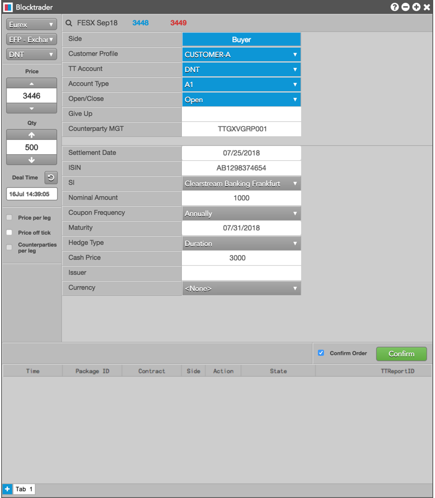
You can use Blocktrader to submit either side of an EFP trade. When you are notified by the counterparty that they have submitted a wholesale EFP Index Futures buy order, you can submit the corresponding sell order and accept the trade in Blocktrader. As part of submitting the sell side of an EFP order and accepting the trade, you must select the Settlement Institution (SI) responsible for clearing the transaction.
To submit Exchange for Physical (EFP) Index Futures trades, you must first complete the fields listed in Common Wholesale Trade Fields for Eurex. In addition, complete the fields provided in the following table.
| Additional Fields for Exchange for Physical Index Futures Trades | ||
| Blocktrader Field | Description | |
|
SI |
Sets the settlement institution for the trade. The selected value must be provided for both the Buy and Sell sides of the trade. |
|
|
Nominal Amount |
Sets the equivalent value of the futures leg to be traded. This value must be represented in units of one thousand. |
|
|
Reference ID |
Set the unique, 12 alphanumeric character value used to identify the equity cash basket linked to the transaction. Note: The first two characters of the Reference ID must be letters. |
|
The following is an example of a EFP Index trade:
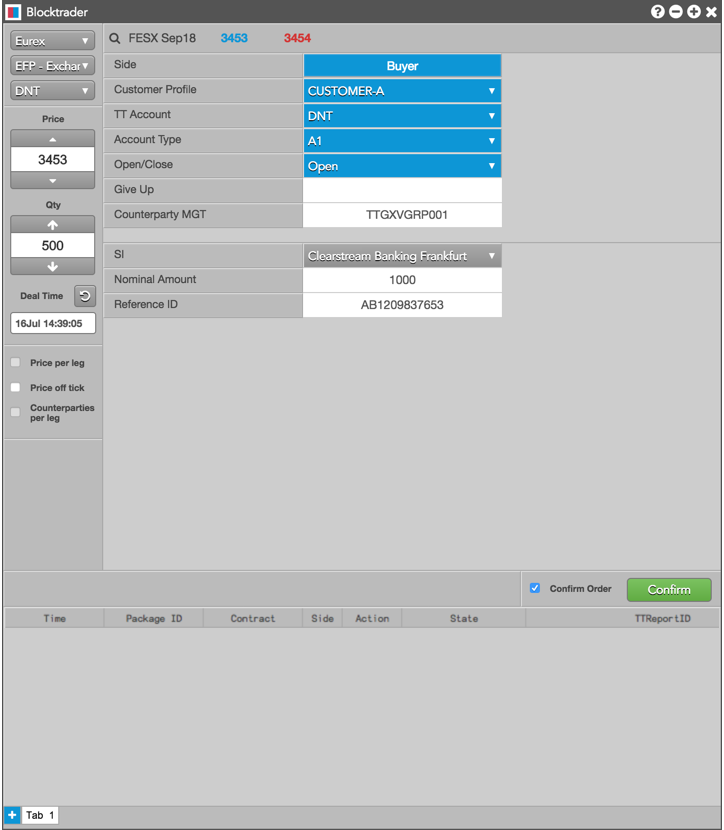
Eurex mandates that members send an "intention to cross" (ITC) message prior to performing a cross trade. Using the Auto ITC option in Blocktrader, you can automatically send this message prior to the cross when you click Submit and confirm the trade. The "intention to cross" message is broadcast to all market participants.
To submit a Cross trade, complete the Blocktrader fields listed in Common Wholesale Trade Fields for Eurex for both sides of the trade.
Before submitting the order, click the Intention to Cross ITC button. This submits your cross request to the market and activates the ITC timer. Eurex sets the time limit to wait before submitting the matching cross orders. The exchange also determines how long the cross request is active.
Optionally, check the Auto ITC checkbox to automatically submit the Cross after your user-defined time limit expires. When enabled, the Submit button displays "Abort" and counts down the timer. If needed, click this button again to cancel the cross request.
The following figure shows an example of a Cross trade in Blocktrader:
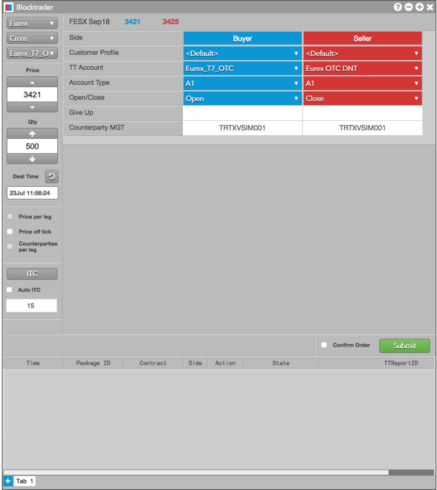